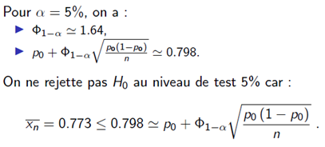

On considère 2 événements A et B inclus dans l’espace de tous les possibles Ω.
La probabilité de A est compris entre 0 et 1
La probabilité que A ne se produise pas (l’inverse donc) est 1 – probabilité de A
La probabilité croisée de A et B est égale à la probabilité de A + la probabilité de B – P(A∩B)
Deux événements sont considérés indépendants si la probabilité de A ou B (P(A∩B)) est égale à la probabilité de A * la probabilité de B
Exemples
On prend un lancer de 2 D6.
A = la somme des 2 dés est impaire
B = au moins un des dés présente un 1
Les ensembles qui vérifient ces conditions sont les suivants :
A : (a, b) avec a et b de parités contraires
B (1, 1), (a, 1) et (b, 1) avec a et b supérieurs ou égaux à 2
Donc :
P(A) = 18/36
P(B) = 11/36
P(A∩B) = 6/36
Les deux évènements ne sont donc pas indépendants, car P(A∩B) n’est pas égale à P(A)*P(B)
Variables aléatoires
Une variable aléatoire est la partie du résultat d’une expérience aléatoire à laquelle on s’intéresse (ex : la probabilité qu’un lancer de D6 donne un résultat pair).
La fonction de répartition est définie dans R par :
La fonction de répartition :
Est comprise entre 0 et 1
Est croissante
Tend vers 0 si x tend vers – Inf
Tend vers 1 si x tend vers + Inf
Le quantile est la loi X d’ordre α qui vérifie les conditions suivantes :
La médiane est le quantile ½
Quartile k/4
Décile k/10
Centile 1/100
Principales lois de probabilités discrètes
Exemple de loi uniforme discrète : un lancer de dé
Loi de Bernoulli
Cette loi s’applique dans les cas où deux résultats sont possibles lors d’un événement. Par exemple : tirer une boule noire ou une boule blanche.
Nous prenons la variable aléatoire X suivante :
X = 1 : tirage d’une boule blanche
X = 0 : tirage d’une boule noire
Dans ce cas :
P(X = 1) = p
P(X = 0) = 1 – p
On dit que la variable aléatoire suit une loi de Bernoulli de paramètre p compris entre 0 et 1 :
Loi binomiale
La loi binomiale est la loi que suit une série de lois de Bernoulli (somme de n Bernoulli). Par exemple : série de n tirages.
Si nous prenons la variable aléatoire X = nombre de boules blanches tirées à l’issue de ces n tirages. On dit que cette variable aléatoire suit une loi binomiale de paramètres n (nombre de tirages) et p (probabilité de l’événement étudié).
Principales lois de probabilités continues
Loi uniforme
Une loi est uniforme si chaque issue à une probabilité égale de se produire.
Loi normale
La loi normale N (gaussienne) suit les paramètres :
µ = espérance (soit la moyenne)
σ² = écart-type
La loi N(0,1) est appelée loi normale centrée réduite.
Φ désigne la fonction de répartition d’une loi normale N(0,1).
D’autres exemples de lois continues :
loi du Khi-deux
loi de Fischer
loi de Student
Espérance et variance d’une variable aléatoire
L’espérance correspond à la moyenne théorique de la loi
La variance correspond à la variance théorique de la loi
Loi forte des grands nombres
La loi forte des grands nombres démontre que la moyenne empirique converge vers la moyenne théorique (espérance).
Le théorème central limit établit la convergence en loi de la somme d’une suite de variables aléatoires vers la loi normale (par exemple, si on fait l’addition de plusieurs jets de dés, les résultats auront la forme d’une loi normale).
Applications (statistiques inférentielles)
Cas d’étude considérés :
Nous prenons deux cas d’étude :
Cas 1 : proportion de guérisons suite à la consommation d’un médicament. On observe au total 167 guérisons sur 216 tests, soit environ 77,3% des cas. Dans ce cas, nous souhaiterions savoir si ce traitement est plus efficace qu’un autre traitement dont le taux de guérison avéré est p = 0.75.
Pour ce cas :
Q1 : quel est le taux de guérison théorique ?
Q2 : on souhaite disposer d’une « fourchette » pour ce taux de guérison
Q3 : on souhaite savoir si le taux de guérison théorique est meilleur que 0.75.
Cas 2 : moyenne des consommations d’essence, sur la base de 128 observations. On observe une consommation moyenne de 31.45 litres aux 100. On souhaite connaitre la consommation théorique, disposer d’un intervalle de confiance sur la consommation des véhicules et communiquer sur le fait que les cars consomment en moyenne 31 litres aux 100.
Pour ce cas :
Q1 : quelle est la consommation théorique des cars ?
Q2 : quel est l’intervalle de confiance de cette consommation ?
Q3 : est-ce qu’on peut dire que la consommation des cars est de 31 litres aux 100 ?
Pour répondre à la Q1 on donne une estimation ponctuelle :
Du taux de guérison théorique (p)
De la consommation d’essence théorique (mu), et la dispersion de cette consommation (sigma²).
Pour répondre à la Q2, on donne un intervalle de confiance.
Pour répondre à la Q3, on mettra en place un test statistique pour vérifier que :
p > p0 avec p0 = 0.75
mu = mu0, avec mu0 = 31
Dans nos cas, on suppose que chaque observation est la réalisation d’une variable aléatoire, c’est-à-dire le fruit d’un tirage aléatoire. On se place dans le cas de figure où toutes les observations peuvent être considérées comme indépendantes et représentatives du phénomène. Les variables aléatoires sont ainsi indépendantes et identiquement distribuées (i.i.d.)
Le cas d’étude 1 correspond à un modèle de Bernoulli (B(p)).
Le cas d’étude 2 correspond au modèle gaussien (N(mu, sigma²)).
Estimations ponctuelles (réponse à la Q1)
Pour appréhender les paramètres des lois des cas 1 et 2, on ne dispose que des observations, réalisations des variables aléatoires iid. On utilise des estimateurs :
Pour les lois de Bernoulli : c’est la proportion / fréquence empirique(ex : fréquence de guérisons, soit 167/216, soit 0.773)
Pour les lois normales :
L’estimateur de l’espérance est la moyenne
L’estimateur de la variance est la variance empirique
Intervalles de confiance (réponse à la Q2)
L’estimateur est un estimateur. Il varie en fonction de l’échantillon considéré. Il est souvent associé à un intervalle de confiance, qui est permet d’énoncer des phrases du type « Il y a 95% de chances pour que le paramètre théorique se trouve dans cet intervalle ».
On peut construire des intervalles de confiance bilatères (encadre le paramètre à gauche et à droite) ou unilatères (encadre le paramètre à gauche ou à droite).
Classiquement, les intervalles de confiance sont de niveaux 90% (α = 10%) ou 95% (α = 5%).
Les intervalles de confiance pour les proportions
Conditions d’application :
Pour les petits échantillons (n < 30), on se base sur la loi binomiale
Pour les grands échantillons ou si la proportion est inférieure ou égale à 5, on utilise l’approximation de la loi normale.
Pour le cas 1 :
Avec un intervalle de confiance de 95%, on obtient que la proportion théorique est comprise entre 0.717 et 0.829.
La largeur de l’intervalle n’est pas négligeable. Mais il n’y a que 216 individus dans l’échantillon.
prop.test(x =167, n =216, p =0.75, alternative ="greater", conf.level =0.95) # Argument conf.level et regarder la sortie "95 percent confidence interval"
1-sample proportions test with continuity correction
data: 167 out of 216, null probability 0.75
X-squared = 0.5, df = 1, p-value = 0.2398
alternative hypothesis: true p is greater than 0.75
95 percent confidence interval:
0.7206161 1.0000000
sample estimates:
p
0.7731481
Les intervalles de confiance pour les moyennes
Conditions d’application :
On a une loi normale
L’échantillon est supérieur à 30
Pour le cas 2 :
Pour un intervalle de confiance de 95%, on obtiens que la moyenne théorique est comprise entre 31.07 et 31.83.
t.test(x = iris$Sepal.Length, mu =5.7, alternative ="greater", conf.level =0.95) # Argument conf.level et regarder la sortie "95 percent confidence interval"
One Sample t-test
data: iris$Sepal.Length
t = 2.12, df = 149, p-value = 0.01783
alternative hypothesis: true mean is greater than 5.7
95 percent confidence interval:
5.731427 Inf
sample estimates:
mean of x
5.843333
Les intervalles de confiance pour les variances
Conditions d’application :
On a une loi normale
L’échantillon est supérieur à 30
Pour le cas 2 :
Pour un intervalle de confiance de 95%, on obtiens que la variance théorique est comprise entre 3.70 et 6.06.
Tests statistiques
On veut savoir si le taux de guérison du médicament est meilleur que pour l'ancien médicament. L'efficacité de ce nouveau médicament est considérée par défaut comme au mieux similaire à celle du précédent médicament. Cet a priori correspond à ce que appelle l'hypothèse nulle, appelée H0. L'hypothèse alternative est notée H1. Elle permet d'indiquer les cas de figure où on rejette H0.
On pose ainsi 2 hypothèses :
H0 : p = p0
H1 : p > p0
Le risque de première espèce correspond au risque de rejeter H0 à tort.
Le niveau de test est la région de rejet de H0 (5%, 1%, …)
Le risque de seconde espèce correspond au risque de non-rejet de H0 à mauvais escient.
L'hypothèse nulle H0 est l'hypothèse qu'on ne souhaite pas rejeter trop facilement. C'est celle que l'on teste.
L'hypothèse alternative, H1, indique dans quelles conditions on rejette H0. Elle donne donc des informations sur la forme de la région critique. (basée sur une statistique de test). Pour déterminer la région critique, il faut connaitre la loi de la statistique de test sous H0.
Pour déterminer la région critique, on regarde la p-valeur :
Rejet de H0 au niveau de test α ⬄ p-valeur < α
Si la p-valeur est faible, cela signifie que l'observation est rare (donc peu probable) sous H0, ce qui incite à rejeter H0.
Test paramétrique pour une proportion
Ici, p0 = 0.75

On peut utiliser la fonction
Prop.test() – test asymptotique avec la loi du khi-deux
Binom.test() – test exact
On peut choisir si le test est unilatère ou bilatère avec le paramètre « alternative » : greater, lesser ou two-sided.
Il faut regarder la « p-value », qui donne le niveau de risque pour rejeter l’hypothèse H0.
Test paramétrique pour une moyenne
Il faut utiliser la fonction t.test dans R.
Test paramétrique pour une variance
Il faut utiliser la fonction var.test dans R.
Tests de comparaison de 2 échantillons
Les échantillons peuvent être de 2 natures :
appariés : les échantillons portent sur des observations réalisées sur les mêmes individus (c'est très rare)
non-appariés : on compare deux échantillons indépendants
Pour comparer la moyenne de 2 échantillons non appariés, on distingue les cas :
Echantillons gaussiens ou grands échantillons, après avoir réalisé un test d'égalité des variances :
Test de Student si les variances sont égales
Test de Welch si les variances ne sont pas égales
Echantillon petit non gaussiens : test de Mann et Whitney
Dans R :
Test de Fisher = var.test
Test de Student : t.test avec les options “paired = False” et “var.equal = True” (si les variances sont égales)
Test de Welch : t.test avec les options “paired = False” et “var.equal = False”
Pour comparer la moyenne de 2 échantillons appariés, on distingue les cas :
Echantillon gaussien ou grand échantillon : test de Student sur les différences
Petits échantillons non gaussiens : test de Wilcoxon
Dans R :
Test de Student : t.test avec l'option « paired = TRUE »
Test de Wilcoxon : wilcox.test avec l'option « paired = FALSE »
Autres cas d’application
Les exemples présentés ci-après sont issus du livre « R pour la statistique et la science des données ».
Intervalle de confiance d’une moyenne
Nous cherchons à construire un intervalle de confiance pour la moyenne mu d'une variable quantitative. En pratique, pour un petit échantillon, on teste la normalité des données avant d'appliquer la formule. Pour les grands échantillons (n > 30), le théorème central limite assure que la formule reste satisfaisante.
Pour ce faire, il faut suivre les étapes suivantes :
Importer les données
Estimer les paramètres (moyenne et écart-type)
Représenter la distribution des données. Avant toute analyse, il est conseillé de représenter les données (histogramme).
Construire l'intervalle de confiance
Pour ce faire, on utilise la fonction t.test(), avec le « conf.level » attendu. Avec ce résultat, nous pouvons affirmer, avec une confiance de 95%, dans l'intervalle obtenu contient la « vraie » valeur de mu.
Si nous réalisons ce test sur une proportion et non sur une moyenne, il faut utiliser la fonction prop.test().
Test du chi² d’indépendance
Il faut utiliser la fonction chisq.test() pour tester l'indépendance entre les effectifs de deux variables qualitatives (l'exemple qui est donné est celui de la répartition de la couleur de cheveux en fonction du sexe). Le test permettra de conclure (ou non) que la couleur de cheveux dépend du sexe de l'enfant.
Le test se construit sur la base d'un tableau de contingence qui peut être obtenu par la fonction xtabs().
Comparaison de 2 moyennes
Il faut disposer d'une variable quantitative qui est supposée avoir été tirée aléatoirement dans une population.
H0 = les moyennes théoriques mu1 et mu2 sont égales
H1 = les moyennes théoriques mu1 et mu2 ne sont pas égales.
L'exemple est celui du poids des poulpes mâles et femelles au stade adulte. Attention, dans le cas des petits échantillons (n < 30), il faut tester l'hypothèse de normalité.
La comparaison se réalise en suivant les étapes suivantes :
Importer les données
Comparer graphiquement les deux populations (comparaison de boxplots)
Estimer les statistiques de base dans chaque groupe
Pour ce faire, dans R, on peut utiliser la fonction aggregate et summary. Exemple :
aggregate(don$Poids, by = list(don$Sexe), FUN = summary)
Pour obtenir l'écart-type, on peut utiliser la fonction tapply :
tapply(don$Poids, don$Sexe, sd)
Tester la normalité des données
Le test ne doit être réalisé que si la taille de l'échantillon est inférieure à 30.
Le test est réalisé en mobilisant le test de Shapiro-Wilk (shapiro.test). Si la probabilité critique est supérieure à 5%, on conserve l'hypothèse de normalité.
Tester l'égalité des variances
On utilise la fonction var.test.
Tester l'égalité des moyennes
On peut utiliser la fonction t.test en renseignant l'argument var.equal = FALSE. Dans ce cas, c'est le test de Welsh. Les modalités de rédaction sont les suivantes :
t.test(Poids ~ Sexe, alternative = « two.sided », conf.level = 0.95, var.equal = FALSE, data = don)
Test sur les proportions
Il s'agit des tests :
De conformité d'une proportion à une valeur donnée. Dans ce cas, on cherche la probabilité d'observer un caractère particulier dans une population et on examine l'hypothèse d'égalité de cette probabilité à une valeur donnée
Des tests d'égalité de plusieurs proportions. Dans ce cas, on cherche à comparer les probabilités d'observation d'un caractère particulier selon l'appartenance des individus à différentes catégories.
On reprend l'exemple de la répartition des couleurs de cheveux en fonction du sexe de l'enfant. On s'intéresse à la répartition des cheveux blonds en fonction du sexe :
Dans un premier temps, on cherche à tester l'égalité des proportions de filles et garçons avec les cheveux blonds. Pour ce faire, on utilise la fonction binom.test, qui réalise un test binomial exact.
Dans un second temps, on cherche à tester l'égalité de la proportion des garçons dans les 5 catégories définies par la couleur de cheveux (blond, roux, brun, …). Pour ce faire, on utilise la fonction prop.test.
Cas 1 :
On veut tester si la proportion de garçons avec les cheveux blonds est égale à 50% :
H0 = la proportion est égale à 50%
H1 = la proportion n'est pas égale à 50%
binom.test(x =592, n =1136, p =0.5, alternative ="two.sided")
Exact binomial test
data: 592 and 1136
number of successes = 592, number of trials = 1136, p-value = 0.1631
alternative hypothesis: true probability of success is not equal to 0.5
95 percent confidence interval:
0.4916142 0.5505297
sample estimates:
probability of success
0.5211268
Si la probabilité critique est plus élevée que 5%, nous conservons l'hypothèse H0 pour ce seuil.
Cas 2 :
On veut tester l'égalité des proportions de filles pour les différentes couleurs de cheveux. Pour ce faire, on utilise la fonction prop.test :